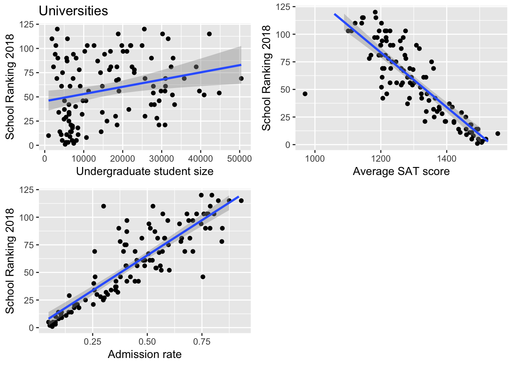
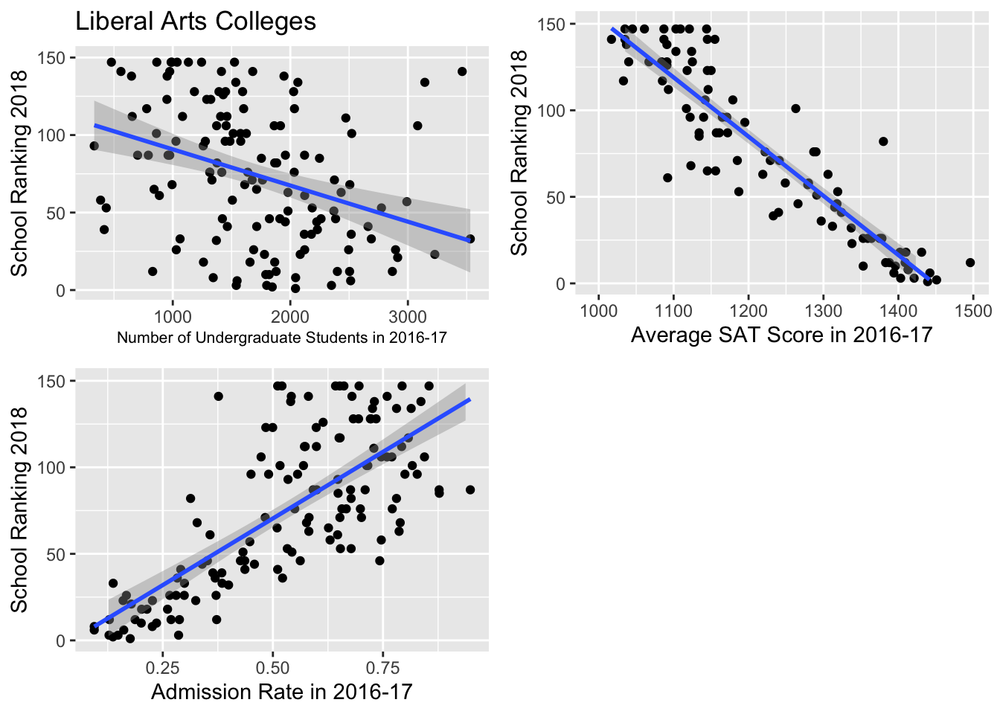

Chapter 9 Becoming a proud Bayesian
For our finalized Bayesian model, we intend to build predictive models for universities and liberal arts colleges. Then we’ll compare the similarities and differences of the two models. (i.e. is some factor important for universities and less so for liberal arts colleges?)
9.1 University Model
9.1.1 Get some intuition
We could build bi-variate visualizations that help us understand the individual trends:

9.1.2 Some additional intuition
For more intuition, we start with more vague priors and slightly adjust the priors based on the summary table. It’s important to note that the priors cannot be set too close to the means of the summary table in case of overfitting.
9.1.3 Building the model
university_model_3 <- "model{
# Data: observations
for(i in 1:length(y)) {
y[i] ~ dpois(lambda[i])
log(lambda[i]) = beta0 + beta1*x1[i] + beta2[z[i]] + beta3*x3[i] + beta4*x4[i]
}
# Data: subjects
beta0 ~ dnorm(8, 1)
beta1 ~ dnorm(0, 10000)
beta2[1] <- 0
beta2[2] ~ dnorm(0, 0.01)
beta2[3] ~ dnorm(0, 0.01)
beta3 ~ dnorm(0, 10)
beta4 ~ dnorm(0, 0.01)
}"
# COMPILE
y <- as.numeric(fullUniversity$Y2018)
model_data9 <- data.frame(y, x1 = fullUniversity$UGDS_1617, z = as.numeric(fullUniversity$LOCALE_collapse), x3 = fullUniversity$SAT_AVG_1617, x4 = fullUniversity$ADM_RATE_1617)
model_data9 <- na.omit(model_data9)
university_jags_3 <- jags.model(textConnection(university_model_3),
data = list(y = model_data9$y, x1 = model_data9$x1, z = factor(model_data9$z), x3 = model_data9$x3, x4 = model_data9$x4),
inits=list(.RNG.name = "base::Wichmann-Hill", .RNG.seed = 454))## Compiling model graph
## Resolving undeclared variables
## Allocating nodes
## Graph information:
## Observed stochastic nodes: 114
## Unobserved stochastic nodes: 6
## Total graph size: 1137
##
## Initializing model# SIMULATE the model
university_sim_3 <- coda.samples(university_jags_3,
variable.names = c("beta0","beta1","beta2","beta3","beta4"),
n.iter = 10000)
# STORE the chains in a data frame
university_chains_3 <- data.frame(university_sim_3[[1]])9.1.4 Model summary
summary(university_sim_3)##
## Iterations = 1001:11000
## Thinning interval = 1
## Number of chains = 1
## Sample size per chain = 10000
##
## 1. Empirical mean and standard deviation for each variable,
## plus standard error of the mean:
##
## Mean SD Naive SE Time-series SE
## beta0 6.693e+00 3.148e-01 3.148e-03 1.064e-01
## beta1 -4.418e-06 1.154e-06 1.154e-08 3.881e-08
## beta2[1] 0.000e+00 0.000e+00 0.000e+00 0.000e+00
## beta2[2] 1.529e-02 3.080e-02 3.080e-04 6.158e-04
## beta2[3] 1.464e-01 5.940e-02 5.940e-04 1.345e-03
## beta3 -2.539e-03 2.136e-04 2.136e-06 6.886e-05
## beta4 1.374e+00 1.055e-01 1.055e-03 1.990e-02
##
## 2. Quantiles for each variable:
##
## 2.5% 25% 50% 75% 97.5%
## beta0 6.1899756 6.474e+00 6.6367448 6.853e+00 7.416e+00
## beta1 -0.0000067 -5.213e-06 -0.0000044 -3.621e-06 -2.184e-06
## beta2[1] 0.0000000 0.000e+00 0.0000000 0.000e+00 0.000e+00
## beta2[2] -0.0454972 -5.617e-03 0.0151296 3.629e-02 7.586e-02
## beta2[3] 0.0265393 1.076e-01 0.1474028 1.870e-01 2.622e-01
## beta3 -0.0030334 -2.650e-03 -0.0025023 -2.393e-03 -2.194e-03
## beta4 1.1282817 1.311e+00 1.3846333 1.447e+00 1.551e+009.1.5 Posterior inference
For an unknown university located in the city with 10000 undergraduates, student mean SAT score of 1400 and an admission rate of \(25\%\) (e.g. Gvictor University), we could predict its ranking from our rjags simulation.
university_chains_3 <- university_chains_3 %>%
mutate(ranking_new = rpois(10000, lambda = exp(beta0 + beta1 * 10000 + beta3 * 1400 + beta4 * 0.25)))
university_chains_3 %>%
summarize(quantile(ranking_new,0.025),quantile(ranking_new,0.975))## quantile(ranking_new, 0.025) quantile(ranking_new, 0.975)
## 1 21 43The interval is more reflective of the intuitive estimate of Gvictor University’s ranking.
9.2 Liberal Arts Colleges
9.2.1 Get some intuition
Similar to what we do with universities, we could build bi-variate visualizations that help us understand the individual trends:

9.2.2 Building the model
liberal_model_3 <- "model{
# Data: observations
for(i in 1:length(y)) {
y[i] ~ dpois(lambda[i])
log(lambda[i]) = beta0 + beta1*x1[i] + beta2[z[i]] + beta3*x3[i] + beta4*x4[i]
}
# Data: subjects
beta0 ~ dnorm(0, 0.0001)
beta1 ~ dnorm(0, 10000)
beta2[1] <- 0
beta2[2] ~ dnorm(0, 0.04)
beta2[3] ~ dnorm(-10, 0.04)
beta2[4] ~ dnorm(-15, 0.01)
beta3 ~ dnorm(-0.3, 100)
beta4 ~ dnorm(36, 10)
}"
# COMPILE
y <- as.numeric(full_LiberalArts$Y2018)
model_data8 <- data.frame(y, x1 = as.numeric(full_LiberalArts$UGDS_1617), z = as.numeric(full_LiberalArts$LOCALE_collapse_lac1), x3 = as.numeric(full_LiberalArts$SAT_AVG_1617), x4 = as.numeric(full_LiberalArts$ADM_RATE_1617))
model_data8 <- na.omit(model_data8)
liberal_jags_3 <- jags.model(textConnection(liberal_model_3),
data = list(y = model_data8$y, x1 = model_data8$x1, z = factor(model_data8$z), x3 = model_data8$x3, x4 = model_data8$x4),
inits=list(.RNG.name = "base::Wichmann-Hill", .RNG.seed = 454))## Compiling model graph
## Resolving undeclared variables
## Allocating nodes
## Graph information:
## Observed stochastic nodes: 101
## Unobserved stochastic nodes: 7
## Total graph size: 1014
##
## Initializing model# SIMULATE the model
liberal_sim_3 <- coda.samples(liberal_jags_3,
variable.names = c("beta0","beta1","beta2","beta3","beta4"),
n.iter = 10000)
# STORE the chains in a data frame
liberal_chains_3 <- data.frame(liberal_sim_3[[1]])9.2.3 Model summary
summary(liberal_sim_3)##
## Iterations = 1001:11000
## Thinning interval = 1
## Number of chains = 1
## Sample size per chain = 10000
##
## 1. Empirical mean and standard deviation for each variable,
## plus standard error of the mean:
##
## Mean SD Naive SE Time-series SE
## beta0 5.7575868 3.6590045 3.659e-02 9.521e-01
## beta1 -0.0001047 0.0001043 1.043e-06 2.494e-05
## beta2[1] 0.0000000 0.0000000 0.000e+00 0.000e+00
## beta2[2] -0.1862067 0.1544641 1.545e-03 3.231e-02
## beta2[3] -0.1221312 0.0503896 5.039e-04 6.979e-03
## beta2[4] -0.5671952 0.2174377 2.174e-03 4.696e-02
## beta3 -0.0024861 0.0028859 2.886e-05 7.252e-04
## beta4 2.9260686 1.0288947 1.029e-02 2.916e-01
##
## 2. Quantiles for each variable:
##
## 2.5% 25% 50% 75% 97.5%
## beta0 4.5244176 4.7629993 4.8721236 5.0651715 18.1141821
## beta1 -0.0001654 -0.0001408 -0.0001265 -0.0001113 0.0002968
## beta2[1] 0.0000000 0.0000000 0.0000000 0.0000000 0.0000000
## beta2[2] -0.2737200 -0.2348096 -0.2141429 -0.1912261 0.2485554
## beta2[3] -0.1984605 -0.1453506 -0.1246138 -0.1044559 -0.0508085
## beta2[4] -0.7104135 -0.6439770 -0.6077693 -0.5682324 0.1487860
## beta3 -0.0119698 -0.0019412 -0.0018121 -0.0017256 -0.0015404
## beta4 -0.9364295 3.1050759 3.1747504 3.2368810 3.35371069.2.4 Posterior inference
For an unknown liberal arts college in a rural setting with 2000 undergraduates, student mean SAT score of 1400 and an admission rate of \(25\%\) (e.g. Hvictor College), we could predict its ranking from our rjags simulation.
liberal_chains_3 <- liberal_chains_3 %>%
mutate(ranking_new = rpois(10000, exp(beta0 + beta1 * 2000 + beta2.4. + beta3 * 1400 + beta4 * 0.25)))
liberal_chains_3 %>%
summarize(quantile(ranking_new,0.025),quantile(ranking_new,0.975))## quantile(ranking_new, 0.025) quantile(ranking_new, 0.975)
## 1 3 16This is totally reasonable! The interval roughly reflects the intuitive estimate of Hvictor College’s ranking.
9.3 Comparison and discussion
Compared to the last attempts, our final model gives reasonable predictions, which is a huge progress! However, the 95% credible interval it provides doesn’t provide an accurate enough interval as desired.
By creating different imaginery universities and colleges, we are able to summarize the most important factors for universities and colleges respectively. We find that universities value SAT score as a more decisive indicator of both students’ admission and their own ranking.